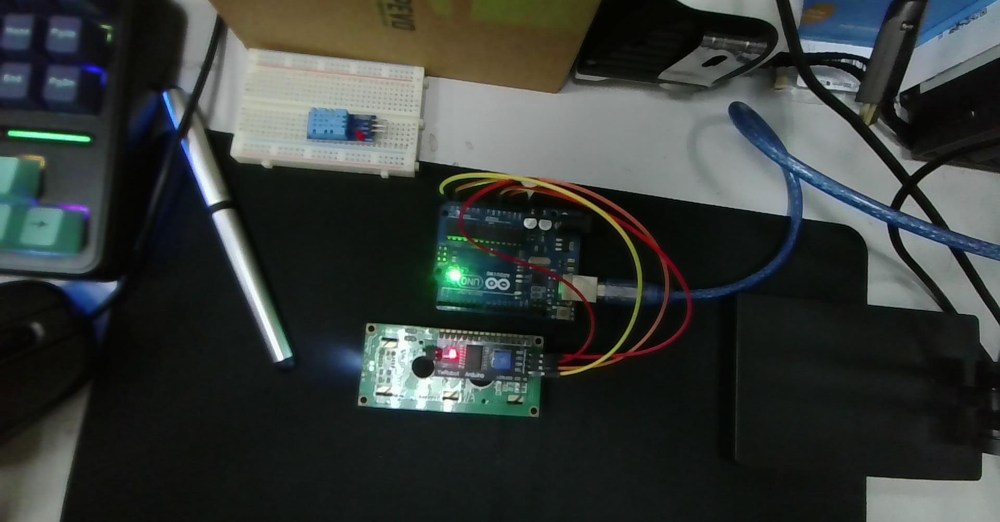
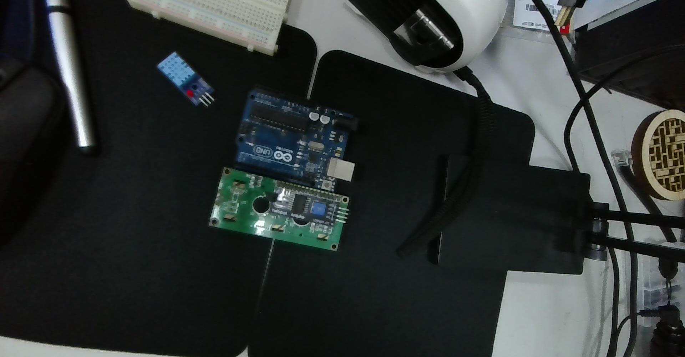
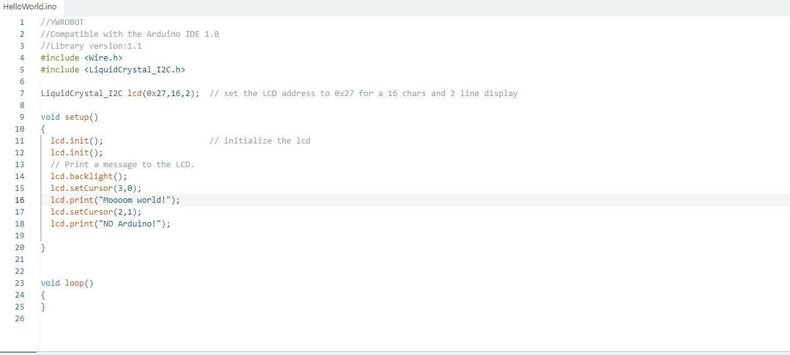

從實體 4-Pin 接線檢核、函式庫安裝、HelloWorld 流程圖到物件屬性與方法的深度實務應用手冊
依據現場上機拍攝的實拍照片，Arduino Uno 透過 4 條彩色杜邦線直接連接 LCD 1602 背面的 PCF8574 I2C 轉接板。


| I2C 轉接板腳位 | 訊號定義 | Arduino Uno 對應腳位 | 照片導線對應 | 核心作用解析 |
|---|---|---|---|---|
| GND | 地線 | GND (電源排針) | 棕色 / 黑色線 | 系統共地迴路，基準電位。 |
| VCC | 電源 5V | 5V (電源排針) | 紅色 / 橙色線 | 驅動 HD44780、PCF8574 及 LCD 背光 LED。請勿接 3.3V。 |
| SDA | 數據線 | A4 或專用 SDA | 黃色線 | 串列雙向資料線 (Serial Data)，負責傳輸控制指令與字元編碼。 |
| SCL | 時脈線 | A5 或專用 SCL | 黃色 / 紅色線 | 串列同步時鐘線 (Serial Clock)，由 Arduino 主機產生驅動脈衝。 |
標準 LCD 1602 具備 16 根排針，若直接由微控制器驅動，至少需要佔用 6 根（4-bit 模式）至 10 根（8-bit 模式）數位 I/O 腳位。 透過 PCF8574 晶片，實現了「串列轉並列 (Serial-to-Parallel)」控制：
0x27，PCF8574A 晶片則為 0x3F。
根據上課擷取的 IDE 畫面，我們使用的是成熟穩定的 LiquidCrystal_I2C 函式庫：

HelloWorld.ino 實機畫面LiquidCrystal I2C。// YWROBOT
// Compatible with the Arduino IDE 1.0
// Library version: 1.1
#include <Wire.h> // 引入 Arduino 官方 I2C 通訊函式庫
#include <LiquidCrystal_I2C.h> // 引入 PCF8574 轉接板專用 I2C LCD 函式庫
// 設定 LCD 位址為 0x27，具備 16 個字元寬度、2 行高度 (16x2)
LiquidCrystal_I2C lcd(0x27, 16, 2);
void setup()
{
lcd.init(); // 初始化 LCD 液晶顯示器
lcd.init(); // 二次呼叫確保電氣時脈與 I2C 匯流排完全就緒
// 開啟液晶背光
lcd.backlight();
// 移動游標至第 0 行第 3 格 (從 0 起算)
lcd.setCursor(3, 0);
lcd.print("Moooom world!"); // 印出測試訊息
// 移動游標至第 1 行第 2 格 (從 0 起算)
lcd.setCursor(2, 1);
lcd.print("NO Arduino!"); // 印出測試訊息
}
void loop()
{
// 靜態展示無須重複運算，loop 保持空白
}
LiquidCrystal_I2C 提供了豐富的 API 控制硬體。掌握以下常用方法即可靈活打造各種文字介面：
| 分類 | 方法名稱與語法 | 參數說明 | 功能解析 |
|---|---|---|---|
| 建構子 | LiquidCrystal_I2C(addr, cols, rows) |
addr: 0x27 / 0x3Fcols: 16, rows: 2 |
宣告物件實例並指定硬體位址與行列規格。 |
| 初始化 | lcd.init() 或 lcd.begin() |
無 | 初始化 I2C 匯流排，設定 HD44780 為 4-bit 運作模式。 |
| 背光控制 | lcd.backlight()lcd.noBacklight() |
無 | 開啟或關閉液晶背光 LED，可用於省電待機或警報閃爍效果。 |
| 游標定位 | lcd.setCursor(col, row) |
col: 0~15row: 0~1 |
指定下一個輸出字元的起始座標（注意由 0 起算）。 |
| 畫面清除 | lcd.clear() |
無 | 清除全螢幕顯示，游標重置至 (0,0)。執行耗時約 2ms。 |
| 游標歸位 | lcd.home() |
無 | 游標移回 (0,0)，但保留畫面上原本的文字內容。 |
| 文字輸出 | lcd.print(value) |
字串、整數、浮點數 | 向當前游標處輸出資料（支援如 lcd.print(val, 2) 格式化）。 |
| 寫入 Byte | lcd.write(byte_val) |
自訂字元代號 (0~7) | 寫入二進制位元組，專門用於輸出 CGRAM 自定義圖示。 |
| 游標視覺 | lcd.cursor() / lcd.noCursor()lcd.blink() / lcd.noBlink() |
無 | 控制是否顯示游標底線 _，或開啟方塊閃爍 █ 效果。 |
| 文字捲動 | lcd.scrollDisplayLeft()lcd.scrollDisplayRight() |
無 | 將整個螢幕文字向左或向右平移 1 格（可用於跑馬燈）。 |
| 自訂圖示 | lcd.createChar(num, data) |
num: 0~7data: 8-byte 陣列 |
在 CGRAM 建立 5×8 點陣的自訂特殊符號（最多 8 組）。 |
在實際專案中，若在 loop() 內部頻繁呼叫 lcd.clear() 會造成肉眼可見的強烈黑白閃爍。
推薦使用「固定格式定位覆寫法 (Fixed Width Overwrite)」來達到極致平滑的顯示體驗：
// 檔案路徑: D:\CLASS_NOTE\ec\arduino_i2c_lcd1602_helloworld.ino
#include <Wire.h>
#include <LiquidCrystal_I2C.h>
LiquidCrystal_I2C lcd(0x27, 16, 2);
// 自定義字元 1: 愛心圖示 (5x8 點陣)
byte heartIcon[8] = {
0b00000, 0b01010, 0b11111, 0b11111, 0b11111, 0b01110, 0b00100, 0b00000
};
// 自定義字元 2: 滿電電池圖示 (5x8 點陣)
byte batteryIcon[8] = {
0b01110, 0b11111, 0b11111, 0b11111, 0b11111, 0b11111, 0b11111, 0b11111
};
unsigned long previousMillis = 0;
const long interval = 1000;
int counter = 0;
void setup() {
lcd.init();
lcd.init(); // 雙重初始化
lcd.backlight(); // 開啟背光
// 註冊自定義字元到 CGRAM (編號 0 與 1)
lcd.createChar(0, heartIcon);
lcd.createChar(1, batteryIcon);
// 啟動畫面展示
lcd.setCursor(1, 0);
lcd.print("Hello, LCD1602");
lcd.write(0); // 印出愛心
lcd.setCursor(0, 1);
lcd.print("Status: Active ");
lcd.write(1); // 印出電池
delay(2500); // 停留 2.5 秒展示
// 進入計時監控畫面
lcd.clear();
lcd.setCursor(0, 0);
lcd.print("Timer Count: ");
lcd.setCursor(0, 1);
lcd.print("I2C Addr: 0x27");
}
void loop() {
unsigned long currentMillis = millis();
// 每秒更新計數，採用定點覆寫避免 clear() 造成的閃爍
if (currentMillis - previousMillis >= interval) {
previousMillis = currentMillis;
counter++;
lcd.setCursor(12, 0); // 固定在第 12 格更新三位數
if (counter < 10) {
lcd.print("00");
lcd.print(counter);
} else if (counter < 100) {
lcd.print("0");
lcd.print(counter);
} else {
lcd.print(counter);
}
// 每 10 秒提示一次游標閃爍效果
if (counter % 10 == 0) {
lcd.setCursor(15, 1);
lcd.cursor();
lcd.blink();
delay(400);
lcd.noBlink();
lcd.noCursor();
}
}
}| 故障現象 | 常見原因 | 標準解法 |
|---|---|---|
| 背光亮，但只見一排黑方塊或全白 | 對比度偏壓電阻未調整 | 用十字螺絲起子微調背板藍色電位器，直到字體清晰可見。 |
| 程式上傳成功，但螢幕無任何反應 | I2C 位址不符（例如實際是 0x3F） |
燒錄下方的 I2C Scanner 程式，從序列埠監視器讀取真實設備位址。 |
| 文字更新時畫面瘋狂跳動閃爍 | 在 loop() 內部頻繁執行 lcd.clear() |
改用 lcd.setCursor() 搭配空格覆寫舊資料，根除重繪閃爍。 |
#include <Wire.h>
void setup() {
Wire.begin();
Serial.begin(9600);
while (!Serial);
Serial.println("\nI2C Scanner 掃描器啟動中...");
}
void loop() {
byte error, address;
int nDevices = 0;
Serial.println("開始掃描 I2C 匯流排...");
for (address = 1; address < 127; address++) {
Wire.beginTransmission(address);
error = Wire.endTransmission();
if (error == 0) {
Serial.print("✔ 找到 I2C 設備！位址為: 0x");
if (address < 16) Serial.print("0");
Serial.print(address, HEX);
Serial.println(" !");
nDevices++;
}
}
if (nDevices == 0) {
Serial.println("未找到任何 I2C 設備，請檢查接線與 5V 供電！\n");
} else {
Serial.println("掃描完成。\n");
}
delay(5000); // 每 5 秒掃描一次
}C:\Users\User\Desktop\2026-10-20-143026.jpgC:\Users\User\Desktop\2026-10-20-143026.jpgC:\Users\User\Desktop\2026-10-20-142320.jpg 這是arduino接lcd 1602 i2c的接線圖，確認好接線後，利用arduino ide尋找liquidstal i2c的程式庫，選擇範例中的helloworld,進行基本的功能測試與程式庫的物件屬性與方法的應用 "C:\Users\User\Desktop\onclass\螢幕擷取畫面 2026-10-20 150654.jpg"變更摘要：依據使用者上傳的實體接線照片與 IDE HelloWorld 截圖，建立完整的硬體接線檢核、I2C 與 PCF8574 原理、Library 安裝流程、HelloWorld 邏輯流程圖、LiquidCrystal_I2C 常用物件屬性與方法手冊、定點無閃爍更新實務程式與 I2C Scanner 疑難排解指南，產出對應 Markdown、HTML 與 INO 實作檔案。